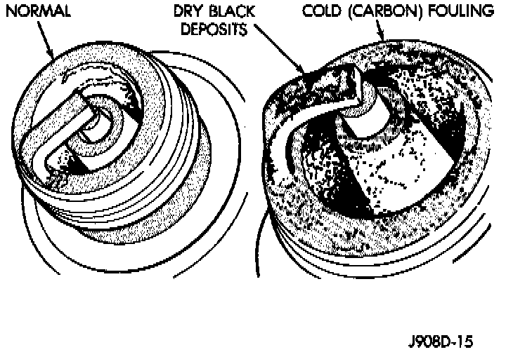

Normal Operating Conditions
Fig. 4 Normal Operation And Cold (Carbon) Fouling:

The few deposits present will be probably light tan or slightly gray in color with most grades of commercial gasoline (Fig. 4). The spark plug will not show evidence of electrode burning. Gap growth will average less than approximately 0.025 mm (0.001 in) per 1,600 km (1,000 miles) of operation. Spark plugs with normal wear can usually be cleaned, have the electrodes filed and gapped, and then reinstalled.
Some fuel refiners in several areas of the United States have introduced a manganese additive (MMT) for unleaded fuel. During combustion, fuel with MMT may coat the entire tip of the spark plug with a rust colored deposit. The rust color deposits can be misdiagnosed as being caused by coolant in the combustion chamber. Spark plug performance is not affected by MMT deposits.